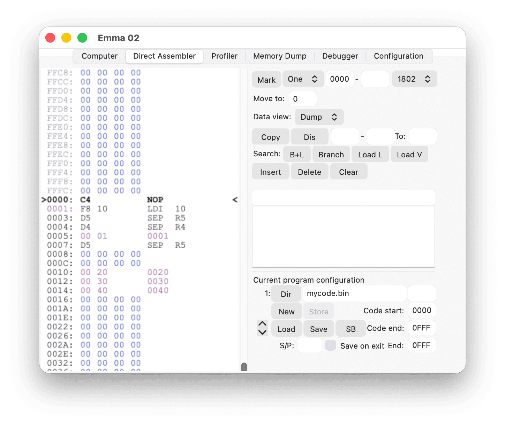
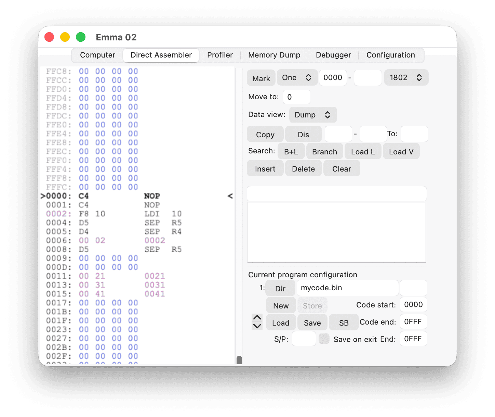
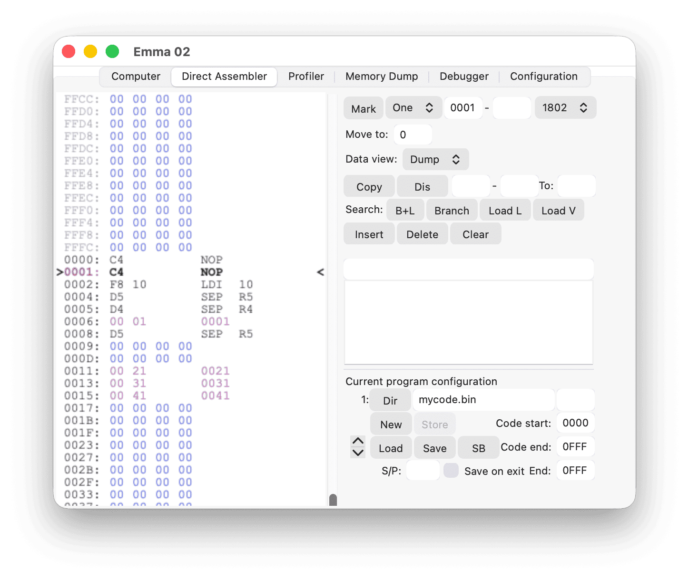

Some code uses branch tables or two-byte address references. For example, COMX BASIC uses R4/R5 for subroutine handling. SEP R4 calls the subroutine at the address specified in the following two bytes, and SEP R5 returns from the subroutine.
Define branch data bytes in the Direct Assembler by typing :address in the command line or by marking the data bytes as Branch via the procedure described in the Memory Type Selection section.
All branch data is shown in purple text. The branch data is then corrected automatically when using insert, delete, or copy commands.
For example, inserting at address 0000 (hexadecimal) in the code below:

results in the following:

Note: The code at address 0005 (hexadecimal) was entered in the command line as :0001.
If an insert is made at address 0001 (hexadecimal) in the original example, the branch to 0001 (hexadecimal) does not change. This allows adding space at the start of a routine, as shown in the example below:
